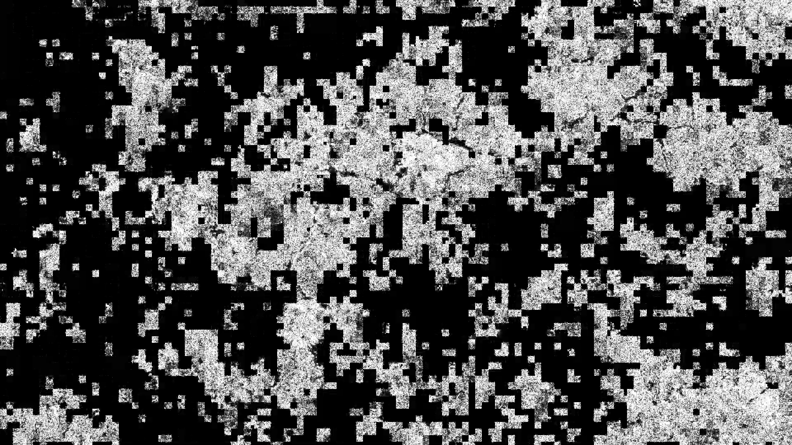
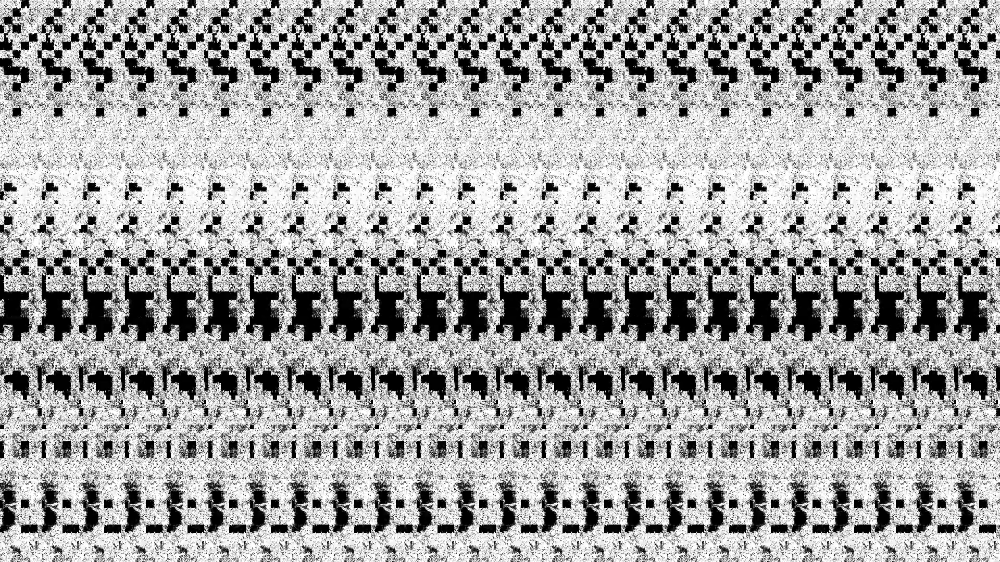
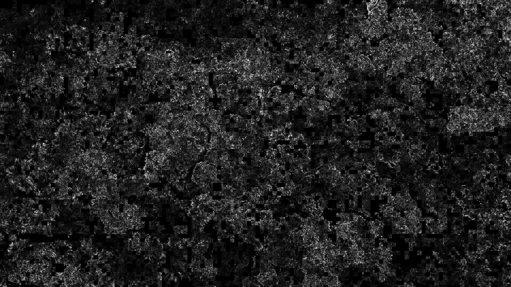

DECAY
2023
Video
DECAY is an audiovisual experiment dealing with pollution and the environment. A dataset [1] of air quality recorded in an area of Italy is utilized, which includes measurements for various harsh chemicals such as carbon monoxide and benzene.
The result is a snapshot of one year of pollution. When levels in the dataset are high, the image becomes more and more unrecognizable, corrupted and broken. The sound cries out in distress and anxiety. And when levels are low, a sense of calmness may be found.
Through various image processing tools, the dataset was mapped to drone footage of a forest taken from above. Multiple aspects of the video are modified based on rising or falling levels of pollution. Most notably, the compression artifacts of the video are emphasized corresponding to high levels of pollution. The audio for the video is also generated based on chemical levels in the dataset and is meant to mimic various aspects of the forest.
[1] https://archive.ics.uci.edu/dataset/360/air+quality
Source video supplied by Dimitar Karanikolov.


